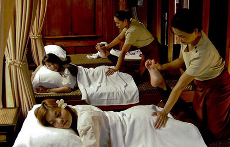

Tradisjonell Thaimassasje
Thaimassasje ser på hele kroppen som en enhet. Thaimassører kjenner kroppens punkter, og kan forbedre enrgistrømmer og blodsirkulasjon. Det er vanlig at man bruker både hender, underarm, albue, føtter og knær under behandlingen.
Thaimassasje kan brukes forebyggende, og som behandling mot mange slags plager. Den er spesiell effektiv mot hodepine/migrene, stivhet i nakke, skuldre og armer, mange ledd og muskelsmerter. Samt at den meget effektivt øker blodsirkulasjonen i kroppen. Thaimassasje gir mykere muskulatur og tilfører kroppen energi.
Anbefales alle som føler seg sliten i kroppen
